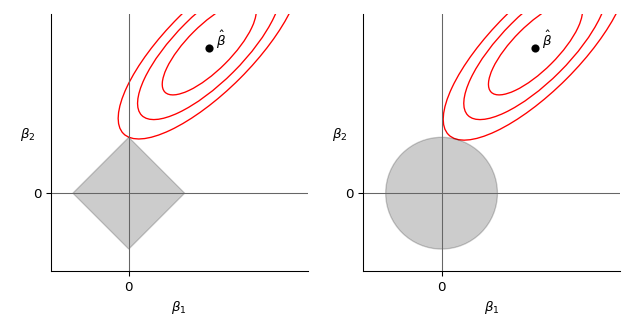
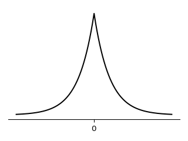
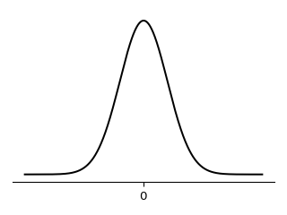

Bayesian case for Lasso and Ridge
Rob Tibshirani has been awarded the 2021 ISI Founders of Statistics Prize, and that’s again a good reason to revisit one of my favourite topics, Lasso regression.
Section five of the original paper Regression Shrinkage and Selection via the Lasso points out the Lasso coefficient estimate $\beta$ is the mode of a posterior distribution derived via Bayes theorem from a Laplace prior. The same can be proven for Ridge coefficient estimate when assuming a normal prior.
Deriving the posterior distributions is a rather simple, purely technical procedure which is likely why it’s left out of the original paper but I found it a useful exercise and so I wrote it down here, together with an experimental check each method performs better on inputs produced using the theoretically more suitable distribution.
Notation & preliminaries
Firstly, $\lVert x \rVert_1 = \sum \lvert x_i \rvert$ and $\lVert x \rVert_2 = \sqrt{\sum x_i^2}$.
Let $X$ be a real valued matrix of standardized (with mean 0, standard deviation 1) independent observations of features (in columns), let $\epsilon$ be an irreducible error vector, $\beta$ a vector of coefficients, and $y$ a response vector of real numbers, such that we get a linear model $y = X\beta + \epsilon$.
In the following approaches we are given $X$ and $y$ and try to find $\hat\beta \approx \beta$ by solving an optimisation problem.
The goal of linear regression is
$$\min _\beta \; \lVert y - X\beta \rVert_2^2.$$
For a given tuning parameter $t \geq 0$, the goal of Lasso regression is
$$\min _\beta \; \lVert y - X\beta \rVert_2^2 \quad \text{subject to} \quad \lVert \beta \rVert_1 \leq t,$$
or equivalently for some tuning parameter $\lambda$
$$\min _\beta \; \lVert y - X\beta \rVert_2^2 + \lambda \lVert \beta \rVert_1.$$
For a given tuning parameter $t \geq 0$, the goal of Ridge regression is
$$\min _\beta \; \lVert y - X\beta \rVert_2^2 \quad \text{subject to} \quad \lVert \beta \rVert_2 \leq t,$$
or equivalently for some tuning parameter $\lambda$
$$\min _\beta \; \lVert y - X\beta \rVert_2^2 + \lambda \sum \lVert \beta \rVert_2.$$
The aforementioned paper presents a convenient graphical view of the differences. On the left we see the rectangle of admissible solutions for Lasso together with contours of $\lVert y - X\beta \rVert^2 = \lVert \epsilon \rVert^2$ given by coefficients around the estimated $\hat\beta$. On the right we see a similar visualisation for Ridge.

Finally, recall the Bayes theorem for random variables $X, Y$ and their PDFs:
$$f_{Y}(y \mid x) = \frac{f_{X}(x \mid y) f_Y(y)}{f_X(x)}$$
For thorough explanation and practical concerns see Elements of Statistical Learning.
Bayesian case for Lasso
The above formulation of Lasso fits into the familiar bucket of techniques which introduce a penalty term on top of a basic goal. However, there’s also a Bayesian way to arrive to the Lasso estimate. Assume the prior distribution of each $\beta_i$ is the Laplace distribution (visualised below) with PDF $\frac{1}{2b} \exp(- \lvert \beta_i \rvert / b)$ for some parameter $b$, and the vector $\beta$ has distribution $\prod \frac{1}{2b} \exp(- \lvert \beta_i \rvert / b)$.

Further assume that each error term is normally distributed with mean 0 and standard deviation $\sigma$. With $y$ and $X$ otherwise fixed, and since product of normal distributions is normally distributed this gives us likelihood
$$\prod_i^n \frac{1}{\sigma\sqrt{2\pi}} \exp\bigl( \frac{-\epsilon_i^2}{2 \sigma^2} \bigr)$$
By multiplying the likelihood with the prior we get the posterior distribution, up to a multiplicative constant (the inverse of the denominator in Bayes’ theorem),
$$\prod_i^n \frac{1}{\sigma\sqrt{2\pi}} \exp\bigl( \frac{-\epsilon_i^2}{2 \sigma^2} \bigr) \cdot \prod_j^p \frac{1}{2b} \exp(- \lvert \beta_j \rvert)$$
Which is equal to the following formula which will be directly useful later.
$$\bigl(\frac{1}{\sigma\sqrt{2\pi}}\bigr)^n \exp\bigl( \sum_i^n \frac{-\epsilon_i^2}{2 \sigma^2} \bigr) \cdot \frac{1}{2b} \exp(-\frac{1}{b} \sum_j^p \lvert\beta_j\rvert) = $$
$$= \frac{1}{2b} \bigl(\frac{1}{\sigma\sqrt{2\pi}}\bigr)^n \exp\bigl( -\frac{1}{2 \sigma^2} \sum_i^n \epsilon_i^2 - \frac{1}{b} \sum_j^p \lvert\beta_j\rvert \bigr)$$
We want to show the Lasso estimate is the mode for $\beta$ under the distribution above. That is, the $\beta$ that maximises the posterior is the one given by Lasso. That turns the problem into the following optimisation.
$$\max _{\beta} \frac{1}{2b} \bigl(\frac{1}{\sigma\sqrt{2\pi}}\bigr)^n \exp\bigl( -\frac{1}{2 \sigma^2} \sum_i^n \epsilon_i^2 - \frac{1}{b} \sum_j^p \lvert\beta_j\rvert \bigr)$$
Logarithm is a monotonic increasing function so we can apply it while maintaining maxima.
$$\max _{\beta} \log(\frac{1}{2b} \bigl(\frac{1}{\sigma\sqrt{2\pi}}\bigr)^n) - ( \frac{1}{2 \sigma^2} \sum_i^n \epsilon_i^2 + \frac{1}{b} \sum_j^p \lvert\beta_j\rvert )$$
The first term does not depend on $\beta$ and thus maximizing the objective without this term is equivalent. Let’s also drop the minus, changing the optimisation to minimum.
$$\min _{\beta} \frac{1}{2 \sigma^2} \sum_i^n \epsilon_i^2 + \frac{1}{b} \sum_j^p \lvert\beta_j\rvert$$
Let $\lambda = 2\sigma^2 / b$ and we get the Lasso objective as we wanted.
$$\min _{\beta} \sum_i^n \epsilon_i^2 + \lambda \sum_j^p \rvert\beta_j\rvert$$
Bayesian case for Ridge
An analogical statement, with the same assumption for $\epsilon$, is true for Ridge regression, just with a normal prior. The derivation is mostly the same but shown below for completeness.
Before proceeding to the analogous argument there’s an extra thing to note. Since the product of normal PDFs is normal, and in normal distribution mode and mean coincide, the estimate is also the mean of the posterior distribution.
In the normal prior setting, for each $\beta_j$ the PDF is $\frac{1}{\sqrt{2c\pi}} \exp(-\frac{\beta_j^2}{2c})$ for some parameter $c$ and together for the vector $\beta$ it is $\prod_j^p \frac{1}{\sqrt{2c\pi}} \exp(-\frac{\beta_j^2}{2c})$.

The posterior is then
$$\prod_i^n \frac{1}{\sigma\sqrt{2\pi}} \exp\bigl( -\frac{\epsilon_i^2}{2 \sigma^2} \bigr) \cdot \prod_j^p \frac{1}{\sqrt{2c\pi}} \exp(-\frac{\beta_j^2}{2c}) =$$
$$= \bigl(\frac{1}{\sigma\sqrt{2\pi}}\bigr)^n \exp\bigl(- \sum_i^n \frac{\epsilon_i^2}{2 \sigma^2} \bigr) \cdot \bigl(\frac{1}{\sqrt{2c\pi}}\bigr)^p \exp(-\sum_j^p \frac{\beta_j^2}{2c})$$
And we can proceed as before
$$\max _{\beta} \log \Bigl( \bigl(\frac{1}{\sigma\sqrt{2\pi}}\bigr)^n \bigl(\frac{1}{\sqrt{2c\pi}}\bigr)^p \Bigr) - \sum_i^n \frac{\epsilon_i^2}{2 \sigma^2} - \sum_j^p \frac{\beta_j^2}{2c}$$
$$\min _{\beta} \sum_i^n \frac{\epsilon_i^2}{2 \sigma^2} + \sum_j^p \frac{\beta_j^2}{2c}$$
$$\min _{\beta} \frac{1}{2\sigma^2} \bigl( \sum_i^n \epsilon_i^2 + \frac{2\sigma^2}{2c} \sum_j^p \beta_j^2 \bigr) $$
$$\min _{\beta} \sum_i^n \epsilon_i^2 + \frac{2\sigma^2}{2c} \sum_j^p \beta_j^2 $$
Choose $\lambda = \sigma^2/c$.
$$\min _{\beta} \sum_i^n \epsilon_i^2 + \lambda \sum_j^p \beta_j^2$$
Experimental comparison
To show the difference is not purely theoretical I did a simple experiment (using Julia) which randomly generates $X$, $\epsilon$, $\beta_l$ with Laplace distribution, $\beta_r$ with normal distribution and compares performance of Lasso and Ridge (with auto-tuned $\lambda$) on this data. Note that I used a fairly high number of features to make sure the choice of distribution reflects clearly in the data, for smaller numbers the results weren’t as persuasive.
Out of 100 repetitions Ridge beat Lasso in 89 cases on data with normal distribution of coefficients and Lasso beat Ridge in 76 cases on data with Laplace distribution of coefficients.
using Distributions, Random, MLJ, MLJLinearModels
Random.seed!(42)
N = 100
ridge_performs_better_on_rdata = 0
lasso_performs_better_on_ldata = 0
for i in 1:N
# data with responses with suitable for Lasso and Ridge
(X, yₗ, yᵣ) = let
n = 1000
p = 500
X, ϵ = rand(Normal(0, 1), n, p), rand(Normal(0, p*0.2), n)
βₗ, βᵣ = rand(Laplace(0, 25), p), rand(Normal(0, 25), p)
yₗ, yᵣ = X*βₗ + ϵ, X*βᵣ + ϵ
(X, yₗ, yᵣ)
end
# train test split
train, test = partition(eachindex(yₗ), 0.7, shuffle=true, rng=42)
# ridge machines on ridge suitable and lasso suitable data
(tuned_ridge_machine_rdata, tuned_ridge_machine_ldata) = let
ridge = RidgeRegressor()
tuned_ridge = TunedModel(
model=ridge,
ranges=range(ridge, :lambda, lower=1e-2, upper=10_000, scale=:log10),
tuning=Grid(resolution=50),
resampling=CV(nfolds=5),
measure=rms)
tuned_ridge_machine_rdata = machine(tuned_ridge, X, yᵣ)
fit!(tuned_ridge_machine_rdata, rows=train)
tuned_ridge_machine_ldata = machine(tuned_ridge, X, yₗ)
fit!(tuned_ridge_machine_ldata, rows=train)
(tuned_ridge_machine_rdata, tuned_ridge_machine_ldata)
end
# lasso machines on ridge suitable and lasso suitable data
(tuned_lasso_machine_rdata, tuned_lasso_machine_ldata) = let
lasso = LassoRegressor()
tuned_lasso = TunedModel(
model=lasso,
ranges=range(lasso, :lambda, lower=1e-2, upper=10_000, scale=:log10),
tuning=Grid(resolution=250), # lasso lambda tends to be higher and our scale is log10
resampling=CV(nfolds=5),
measure=rms)
tuned_lasso_machine_rdata = machine(tuned_lasso, X, yᵣ)
fit!(tuned_lasso_machine_rdata, rows=train)
tuned_lasso_machine_ldata = machine(tuned_lasso, X, yₗ)
fit!(tuned_lasso_machine_ldata, rows=train)
(tuned_lasso_machine_rdata, tuned_lasso_machine_ldata)
end
# evaluate
rms_ridge_rdata = rms(yᵣ[test], predict(tuned_ridge_machine_rdata, rows=test))
rms_lasso_rdata = rms(yᵣ[test], predict(tuned_lasso_machine_rdata, rows=test))
rms_ridge_ldata = rms(yₗ[test], predict(tuned_ridge_machine_ldata, rows=test))
rms_lasso_ldata = rms(yₗ[test], predict(tuned_lasso_machine_ldata, rows=test))
ridge_performs_better_on_rdata += Int(rms_ridge_rdata < rms_lasso_rdata)
lasso_performs_better_on_ldata += Int(rms_ridge_ldata > rms_lasso_ldata)
end
println(ridge_performs_better_on_rdata, lasso_performs_better_on_ldata)